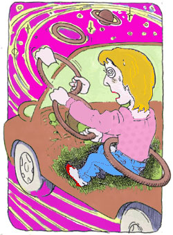

パニック障害4
不安と共に
（不安神経症、パニック症、うつ病）
熊谷 貴子（仮名）46歳・主婦
抑圧された人生
私は両親、祖父母、兄姉の7人家族でした。祖父母は他界しております。父が一代で築いた学習塾(県内各地に14ヶ所に展開しております)を家業として外部のスタッフも含めて手伝っております。父は、傲慢で自己中心的、ケチ、人前で怒鳴る。まるで絶対君主のようでした。3歳から英才教育を受け家業を継ぐのは私だという暗黙のプレッシャーを感じていました（兄姉に比べ出来が良かったようです）。
今振り返れば、私の人生は諦めの連続でした。小学三年生の時、「成績がオール5だったらピアノを習わせてくれる」と、約束し、頑張った結果オール5でした。しかし、「ダメだ。お前のやる気を出させる為に言った」と、あっさり言われました。「子供の日」には、何処にも出かけたことはなく、家族旅行などしたこともありませんでした。高校は志望校に行かせてもらえず、全て父の思いどおりに、まるで見えないレールの上を生きてきたように思います。
完全主義から不安神経症に
22歳から家業を手伝い始め、途中嫌なことはあったものの、生徒や保護者から「先生のおかけです」と、感謝されることが励みとなり仕事に遣り甲斐を感じていました。しかし、39歳の頃、一人のモンスターペアレントのクレームをきっかけに私の心身は蝕まれていきました。クレーマーの子供はとても優秀で両親とも高学歴のせいか少しのミスにも指摘してきました。その為私は、いつも完璧を自分に求め、絶対にミスしないようにと何かに取り憑かれたようでした。その後クレーマーの子供は退会したものの、保護者との対応が恐怖症になってしまいました。
30代前半から不眠症に悩まされ睡眠薬を処方されていましたが、パニック発作を引き起こした半年程前からは薬も効かず、3日に一度くらい3時間程度しか眠れなくなりました。眠いという感覚も失われ、常に覚醒状態で正気が保てているのが不思議な程でした。両親に休職したいと頼みましたが、取り合ってくれず、絶望しながら何とか気力を振り絞り続けていました。
44歳の1月に車を運転中に激しい動悸と息苦しさで運転することが怖くなり、その後も何度も同じ状況に逢い、祖父と父親が心臓病を患った為、5月に循環器科を受診しました。待合いで2時間近く待っている間も症状が出て（今思えば予期不安でした）血液検査の際、大きな発作に見舞われました。検査結果は異状なしだったので「主治医に相談するように」と、言われ7月にパニック障害と診断されました。
両親に運転恐怖と激しい焦燥感、常に息苦し感じと食欲不振などを報告し「休職したい」と言い、再度懇願したものの、やはり拒否されました。「何故？」と、問うと「人手が足りない、人件費ももったいない、私たちは高齢なのに働かせるつもりなのか、お前は若いから大丈夫」と、言われ「ああ、私は奴隷なんだ、重い病気に罹らなければ休めないんだ」と、心が折れてしまい、うつ病も併発してしまいました。
それでも夫に送迎してもらい11月まで仕事に行きました。しかし、文字も頭に入らなくなり、自分の声も遠くから聞こえ体重は5キロも減少し、このままでは廃人になってしまう危機感から両親の反対を押し切り休職しました。実家からは離れて夫と子供もなく2人くらしでしたので、両親とは疎遠のまま今に至っております。
森田療法との出会い
病院で大きな発作を起こした為、病院へ行くことも出来ず、外出するのも怖く、半ば引きこもりの生活を送っていました。漢方薬を試したり、自己流で暴露療法に挑戦するも恐怖に負け、スピリチュアルに頼ったり、神社にお参りをしたこともあります。
そんな折り、45歳の6月、インターネットで森田療法を知り、こちらにたどり着きました。そこには、私と同じ症状の方がたくさんいらっしゃることと、「神経症は病気ではない」ということに大きな衝撃を受けました。そして、私には森田療法しかないと決意し、独学で必死に学習しました。

森田療法の書籍はネットで購入していましたが、そのうち、中身を確認してからという欲望から、恐る恐る図書館に行きました。始めは借りるどころではなく、10分も居られず逃げ帰っていました。しかし、諦めず、徐々に滞在時間を伸ばしていきました。2週間毎日通い続けた頃には、症状を忘れて学習に熱中出来るようになっていました。今考えると、図書館という場所が適していたんだと思いますが、図書館を走って逃げるわけにはいかない…気を紛らわす音楽もない…ただ、発作が起きるかもしれない恐怖と対峙するしかありません。感情の法則で消失するのを待ちました。これが体得することに繋がったんだと思います。
運転恐怖については、信号待ちが怖く、発作を起こしていましたが、発作を起こしたくないという感情を「発作で死ぬことはない」客観的事実と「自分は怖がる者である」という主観的事実を認め、私はビビリ屋なんだ。弱い人間…これがあるがままの私、と考えることで運転にたいする恐怖が徐々に薄れていき、一ヶ月程で「もう発作を起こしたくても起きないのではないだろうか」と、自信がついてきました。
恐怖突入を経て克服へ（心機一転）
45歳の8月3日に最大の恐怖突入である免許更新を果たしました。
昨年7月にパニック障害と診断されてから、私の心の奥深くに住み着いて離れなかった「恐怖」をついに乗り越えた瞬間でした。以前(7月中旬)に、一度免許センターの駐車場まで行ったものの「あ、髪が跳ねてる、嫌だな」と思い、鏡を見ながらグズグズしていると、不安感が増してきてしまい中に入ることが出来ず帰ってきてしまいました。「逃げれば恐怖は倍増する」と、ことわざにもありますが、そこから今日までの間、まさにその通りになってしまいました。
「もう、免許センターに行きたくない」「免許失効してもいい」とさえ思ってしまい、煩悩の毎日を過ごしてしまいました。
この件を管理人さんに電話相談した折、「明日行きなさい。前回のようになりたくなかったら、タクシーで行くように」「自らの退路を絶ち『背水の陣』で臨むように」と、アドバイスを頂きました。
ただ、素直でない私は、電話が終わってから「どうしよう、どうしよう」と、かなり囚われてしまい、予期不安がなかなか収まらず、「もう、めんどくさい」「車の運転は必要なんだ！」「明日は何が何でも行く！」と、心に決め、覚悟をしたら予期不安が消えていきました。
さあ、免許センターに着きました（覚悟を決めたので自車で行きました）前回のようにならないよう、駐車後何も考えず、すぐに車から降りました。 中に入り、手足は震え、口も乾き、動悸もします。受付を済ませ、これで一息つきましたが、視力検査に並んでいる時も症状は収まりません。
「逃げる?」と、自分に問いかけると、「嫌だ、逃げずに踏みとどまるんだ！」を何度か繰り返していると、写真撮影を待つ間には徐々に落ち着き、全てを終えたら(講習はまだでしたが) 症状は消失していきました。この時の嬉しさは、今までの人生で一番かもしれません。嬉しくて涙が出てしまいました。その後、1時間の講習(違反者ですので) は楽しくさえ感じられ、今の気分は、「これから、私は何でも出来るんじゃない?」と、自信が漲っていました。昨日から今日の心の流転を常に忘れず、日々の暮らしを精一杯、全力で生きて行こうと思いました。 後押ししてくださった管理人さんに心から感謝します。本当にありがとうございました。
「ドキドキ」から「ワクワクドキドキ」へ
私は森田療法に出会ってから2ヶ月弱で克服することができましたが、身体のあちこちの違和感を治してから行動したいと、囚われていては永遠に何もできなかったと思います。不安や症状があっても出来ることをする。森田療法は実際と実行です。夫には「根性だな」と、言われましたが、怖くても、その先にある快の感動を数多く味わうことが克服への道だと痛感しております。不安と共に。不安は常にそこにあるもの。追い払おうとしなくていい。心臓の鼓動をコントロールできないように不安もまた同じだと気づきを得ることができました。
管理人さんから克服宣言を受けてから2ヶ月後の10月に隣県まで用事があったため、高速道路を約1時間運転しました。(夫は助手席にいました) 所々にトンネルがあり、長いトンネルでは、「あ、怖いかも、発作来るかな」と、身構えたものの、「ディズニーランドのスターツアーズみたい」と、考えることで流転することができました。今までは、この「ドキドキ」が厄介だったのですが、「ドキドキ」=100%不安(パニック)と捉えていたのが、「ワクワクドキドキ」の「ドキドキ」に60%位変換出来るようになったように思いました。辛い、苦しい、怖い、それも事実です。今までは、それらから逃避して、「ああ、発作が起きなかった、良かった」と、安堵していました。でも、それを乗り越えて、「やればできるんだ」と、まさに不安と欲望は表裏一体だなと、実感できたように思います。
今の私は、森田的には小学校一年生レベルですが、今後も学習を深め、人間的にも成長していきたいと思います。最後にこのような場を提供して下さった岡本記念財団の皆様と体験フォーラムの皆様に感謝申し上げます。